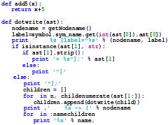

Sonido Developers
As Melhores Soluções em Informática
Saiba Mais Sobre Mim
Desenvolvido Por: Gabriel Rodrigues
Atualizado em 04/07/2020
Quem Sou Eu
Olá! Meu Nome é Gabriel Rodrigues, tenho 16 anos e sou estudante de informática pelo Centro de Ensino Médio Integrado do Gama (CEMI-Gama). Nascido na Região Administrativa do Gama, moro hoje no Entorno do Distrito Federal, no municipio de Novo-Gama de Goiás. Presto serviço nas mais diversas áreas de informática, sendo na maioria delas um profissional certificado. Aficionado por Star Wars, leitor Assíduo de quadrinhos, apaixonado pelas mais diversas formas de música, louco por mangás e animes, e com amor a Deus acima de tudo. Bom isso é um pouco de quem sou eu como pessoa.

Arte DC e Marvel
Arte Criada no Photoshop que mostra o visual dos principais herois da Marvel e DC